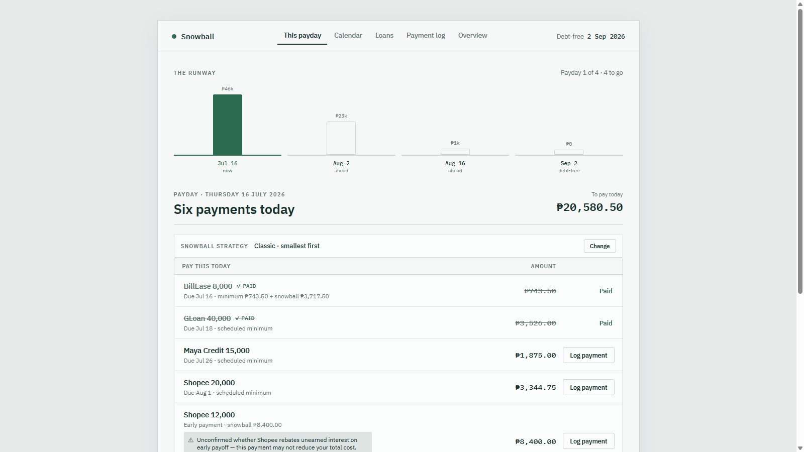
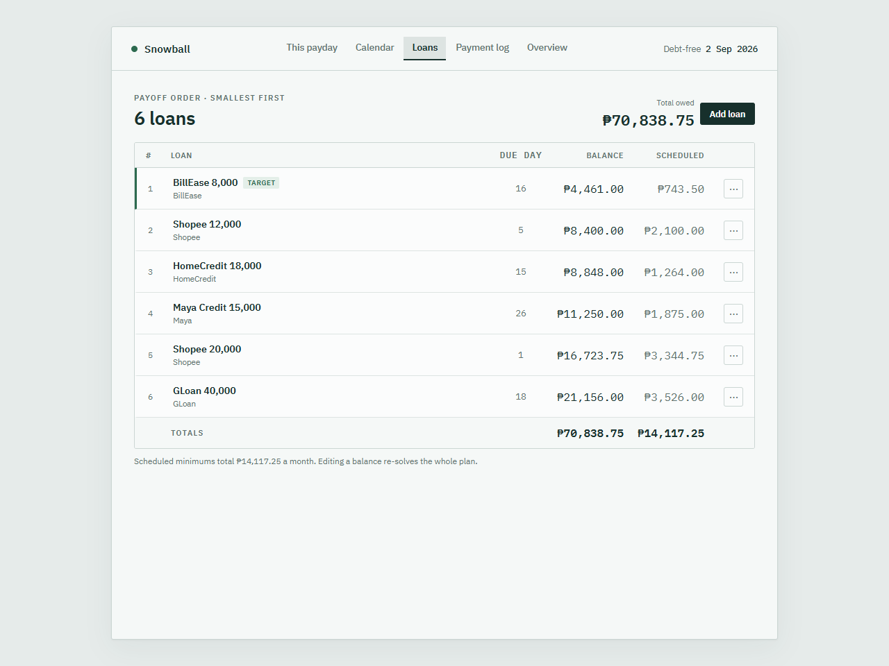
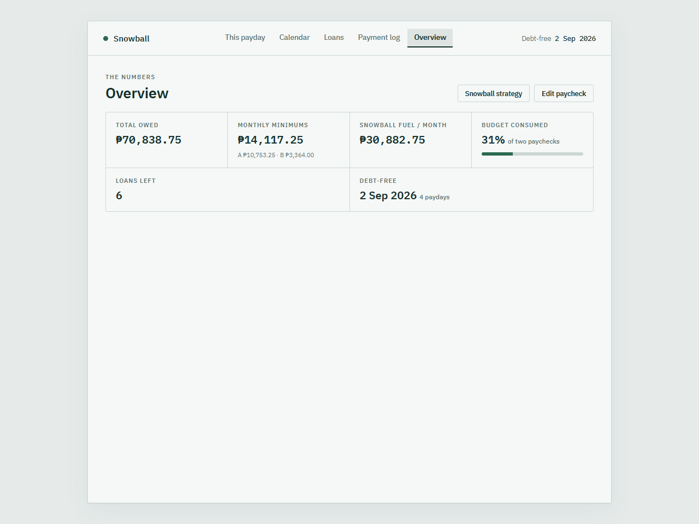

Snowball
Debt payoff planners think in months; paychecks land on the 2nd and the 16th. Snowball projects the whole payoff one payday at a time, re-solves the plan from real balances after every logged payment, and nudges before anything falls due.

fictional dataThe problem
Consumer credit in the Philippines arrives in fortnight-sized pieces: BNPL installments, app loans, store credit. Each has its own due day, funded by a paycheck that lands twice a month. Every debt-payoff tool I found models this monthly, and monthly is simply wrong here. A bill due on the 1st cannot be paid from the paycheck on the 2nd; it has to come out of the previous 16th’s money. A semi-monthly loan owes on both paydays. Get the funding wrong and the plan tells you to spend money you won’t have for another two weeks.
Worse, planners drift. The spreadsheet says one thing, reality says another, and reconciling them is manual work that stops happening by week three. Snowball never lets plan and reality drift apart: every screen and every notification is recomputed from what is actually owed right now, one payday at a time, until the book hits zero. Money is exact to the centavo, and financial data never leaves the machine.
“The plan is never edited — it is re-solved. Actual and projected state can’t drift, because there is only one source of truth: the balances.”
A payday model, not a monthly model
The domain constant isn’t the month; it’s the two paychecks. Every loan maps to the paycheck that can actually fund it (the due-on-the-1st edge case belongs to the previous fortnight), and each projected payday pays minimums first, holds back a reserve so the next payday can still cover its own minimums, then rolls everything left onto the smallest balance. The reserve is the trade-off that makes the greedy snowball safe: it stops a surplus payday from draining money a tight payday will need.
Pure engine, thin shell
The projection is pure functions over immutable inputs. No I/O, no clock, no globals. The web UI, the calendar grid, the notifier, and the CLI all ask the same question through one service call: given current balances, what’s the plan? That is why the whole thing holds together at 159 tests: the hard logic is testable without a browser, a toast, or a database.
Exact money as an enforced invariant, not a convention
Amounts are Decimal in memory and TEXT in SQLite; a float column would silently corrupt centavos. When a payday’s extra is split across several loans, the split is done in integer centavos with largest-remainder apportionment, so the shares sum to the pool exactly. No rounding leak, ties broken toward the smallest balance to preserve momentum. A test greps the engine for float and fails the build if one appears.
Payments settle against a cycle, not a timestamp
“Did I pay this fortnight?” sounds trivial until an early payment for the next cycle looks identical to a late payment for this one. Every ledger row is stamped with the payday it funds, at logging time. Timestamp-window schemes leaked in both directions; the tag settles each payment against exactly one payday, forever, and paying early correctly silences the overdue nag.
- Projects the full payoff (every payday, every loan, reserve and snowball per fortnight) down to a debt-free date.
- Logs real payments and re-solves the whole plan from the new balances, instantly, on every edit.
- A month calendar of the same plan: payday totals, due chips, paid checkmarks, and overdue, the only red in the app.
- Seven kinds of quiet Windows toasts, each guaranteed to fire exactly once per period.
One background process, three roles: a FastAPI web UI bound to 127.0.0.1 (the browser is the only window), an hourly scheduler that decides notifications, and a system-tray icon that owns the main thread. Beneath them, strict layers: a pure domain engine for the projection, a SQLite store that backs the database up before any schema migration, and one service seam where the two meet. The notifier’s deciding logic is itself a pure function of loans, ledger, plan, config, and the clock, tested without toasts or a timer.
Two design choices carry the reliability story. Notification dedup is a database row keyed by event and period, so an hourly re-check and a laptop that slept through the morning both resolve to “fire once, exactly once.” And the single-instance guard is an OS file lock rather than a bound port: a reserved port fails in a way that is indistinguishable from “already running,” which would wedge the app shut, while the file lock self-clears even on a crash.


Snowball runs daily on my own machine; it plans my actual payoff. The build proves out exact-money arithmetic under division, a re-solve-don’t-reconcile architecture, and calm failure-first design: shortfalls flagged loudly, red reserved for genuinely missed payments. It is deliberately local, with no accounts, no cloud, and no telemetry. The screenshots on this page show the real app served against a fictional loan book; the actual numbers stay private, which is rather the point of the product.